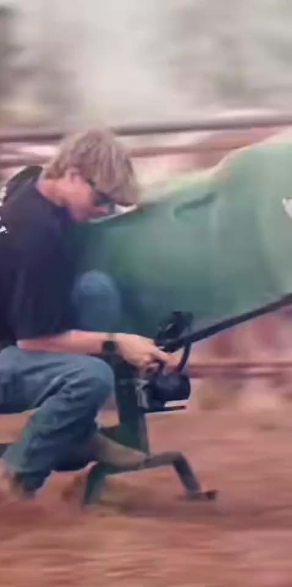
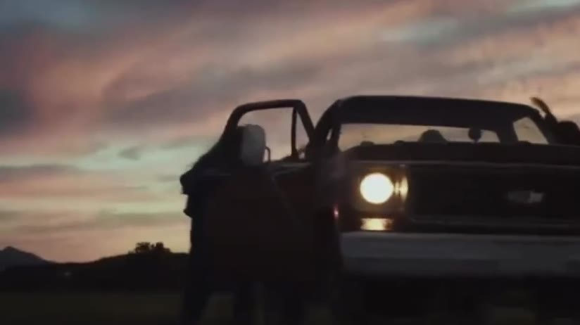
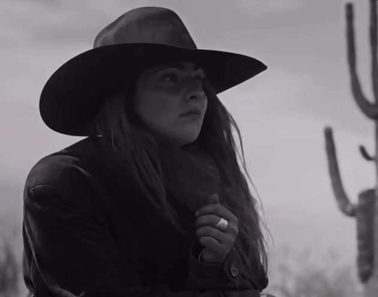
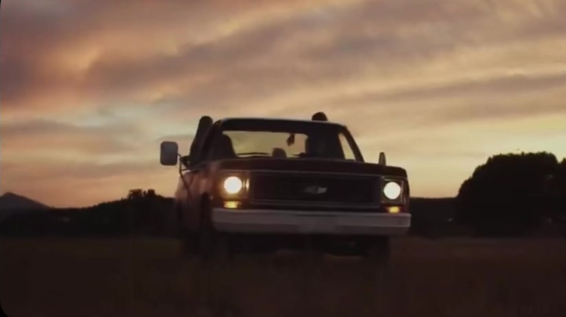
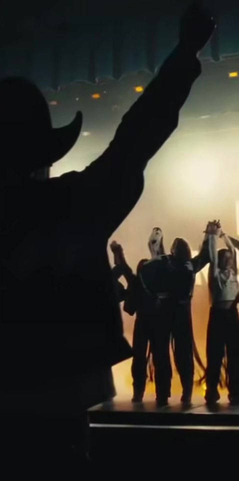
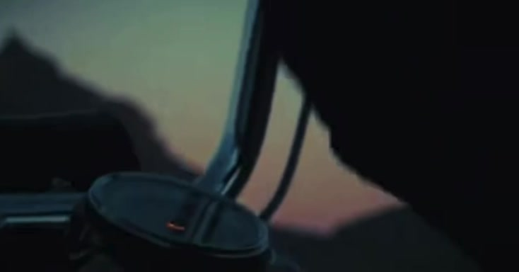

JP
Silva
Filmmaker · Producer · Photographer
Austin, Texas30.2672° N · 97.7431° W
Reel 01 · Featured work05 films
Featured work
Reel 02 · Selected films06 films
Features


Film that feels lived in, not staged.
Roll 03 · Stills
Contact strip
FR 01 / 07

FR 01Western, B&W 
FR 02Field at Dusk 
FR 03Showreel 
FR 04Night Ride FR 05Desert Highway 
FR 06Forest, Rain 
FR 07Prints · Exhibited 2025
Stills from the films · prints on the wallSwipe
Call sheet · What JP makes07 disciplines
Services
- 01Music videosFrom the first idea to the final cut: performance, narrative, or both.
- 02Film & video productionShort films, documentary pieces and story-led video.
- 03Commercial & brand contentBrand films, branded series and social cuts for companies and venues.
- 04Live & event coverageShows, sessions and events, filmed and photographed as they happen.
- 05PhotographyEditorial, live and on-set stills.
- 06Portrait sessionsPortraits for artists, press and personal work.
- 07Creative productionPlanning and producing shoots end to end: locations, schedule, people, delivery.
Director’s statement
- Based
- Austin, TexasSince 2025
- From
- Bauru, São Paulo, Brazil
- Works in
- Music video, brand film, live, photography
- Exhibited
- Prints in a group exhibition2025
I’ve always been more interested in honest shots than “perfect” ones. As a filmmaker, I find myself drawn to the quiet pauses and the unscripted moments that people don’t usually plan for, but always feel.
Born in Bauru, São Paulo, Brazil, JP moved to the United States at thirteen. He started out shooting live shows in Phoenix, and the cameras followed the bands: music videos, tours, the long days and late nights in between.

Contact
Tell JP what you’re making.
- New project
- Start an inquiry
- @jp.media
- YouTube
- @jpsilvafilms
Based in Austin, Texas